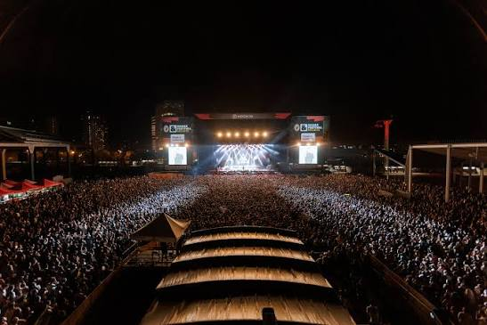
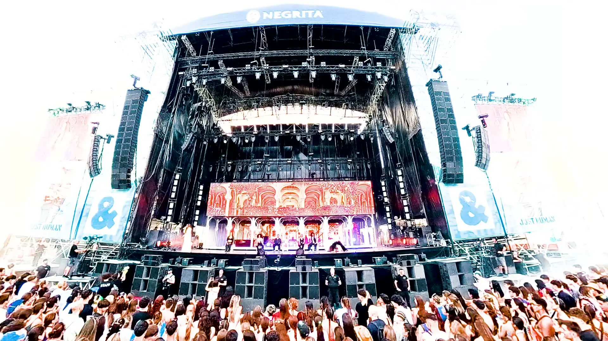
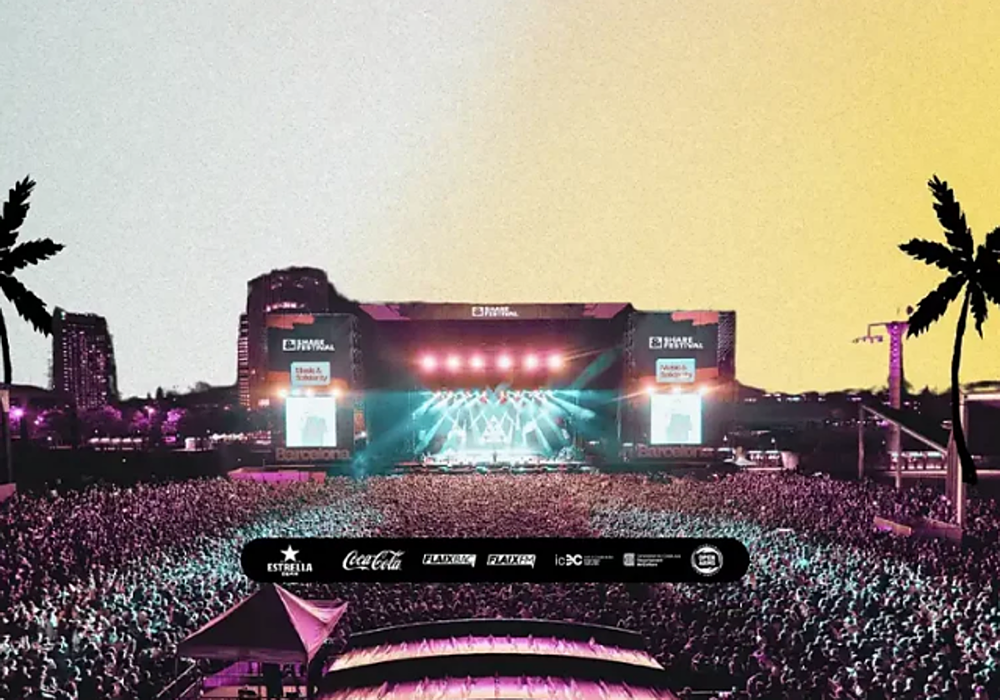
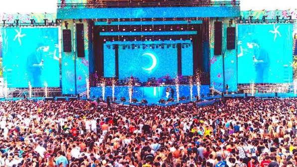
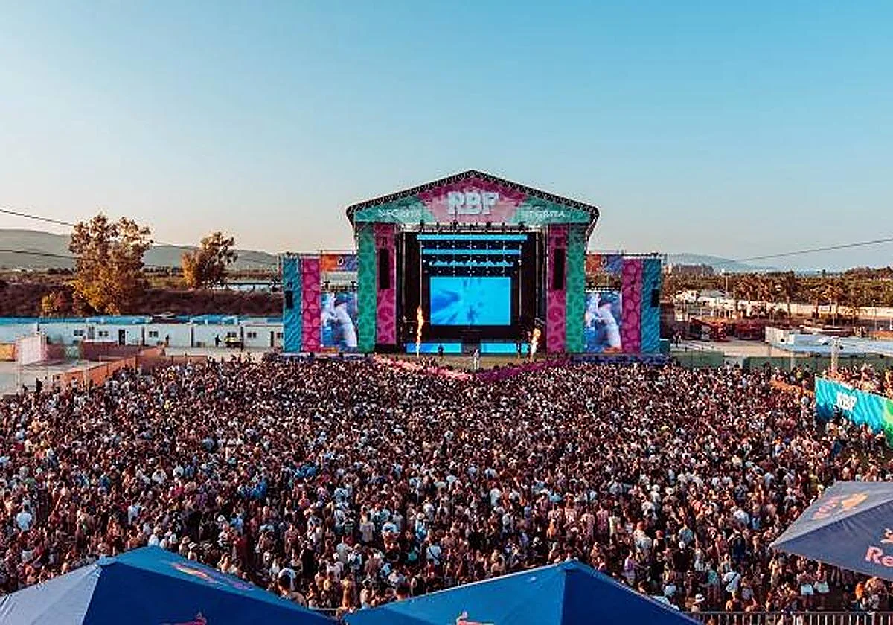
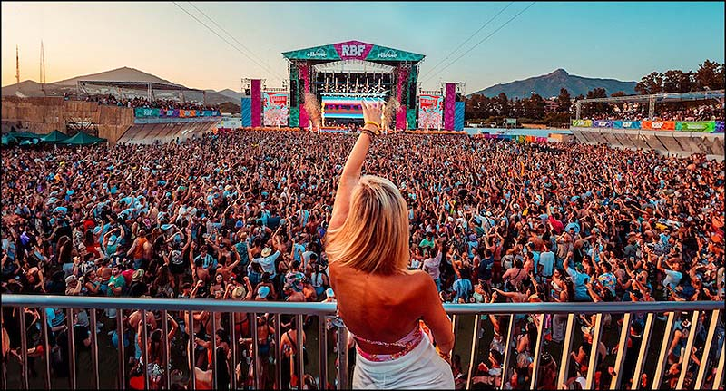

CRONOS FESTIVAL
Benvinguts a Cronos Festival. Actualment tenim problemes tècnics a la nostra pàgina web principal, però estem treballant per solucionar-los. Mentrestant, en aquest lloc web temporal d'emergència podeu trobar tota la informació més important del festival.
Menú principal
- Notícies - Adriano
- Artistas - Joel
- Programa - Pau
- Inicio
- Escenario Share
- Escenario RBF
- Escenario Zevra
Escenario SHARE



El Escenario Share será el espacio más grande
e importante del festival. Aquí actuará unp de los artistas
más destacados.
Entre ellos encontraremos a
Beethoven y
Será un escenario lleno de energía, luces y música
clásica en directo.
Escenario RBF



El Escenario RBF estará dedicado
principalmente a los estilos musicales actuales,
como el trap, el rap y el reguetón.
En este escenario actuará
Delaosa,
con sus canciones más conocidas y su estilo
urbano y callejero.
Será uno de los espacios con más ritmo del festival.
Escenario Zevra


El Escenario Zevra ofrecerá
una experiencia musical diferente, con actuaciones
y sonidos variados.
También contará con la actuación de
JcReyes y
Cano.
Será un espacio pensado para disfrutar de la música
en un ambiente más cercano y diferente.